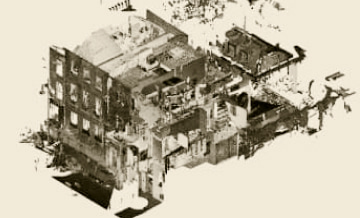
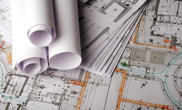

Have any questions? Contact us!
Construction RFI: Template, Best Practices
As an Architecture, Engineering, and Construction (AEC) specialist, you are likely to be familiar with using RFI in construction. Still, not many architects or contractors actually know the real costs of the suboptimal construction RFI handling workflow. Nearly $860,000 out of every $1million spent on long-term projects is allocated to handling RFI documentation, according to the findings of a Navigant Construction forum survey that involved nearly 1,400 projects.
Try to wrap your head around the fact that nearly 86% of expenses go not into construction but are spent on the time wasted while multiple stakeholders ping-pong inefficient RFIs back and forth. This is a colossal waste of customer’s resources — but it can be made efficient with the proper project management. Read on to learn all about what RFI is, what it is used for, how to write an RFI construction document, and how to properly respond to it.
What is RFI in construction?
As a rule of thumb, a request for information in construction is a document meant to resolve any ambiguities, fill in the gaps, or clarify any concerns that arise during the construction project. Subcontractors usually issue these RFIs to general contractors or clients to solve a particular issue. The term can also apply to initial inquiries made by the customer before the tender bidding stage to gather some preliminary information on the costs and methods of project delivery by different contractors.
What is it used for?
No designs, construction plans, as-built documentation, or blueprints can predict all the issues that may occur throughout a lengthy construction project. Some materials or equipment might have to be replaced, some system configurations might need to be updated, and there are plenty of other issues that might arise. To avoid costly reworks further down the track, each case should be appropriately highlighted and processed according to a stable workflow.
The most common example of RFI in construction takes the form of a request from a subcontractor to a general contractor to provide additional details in situations such as:
- Design clarification. Many changes can occur during the project. Should any part of the design be unclear or contain conflicts with the actual structure, an RFI should be filed.
- Substitution of materials. Sometimes the originally intended materials become unexpectedly unavailable, unaffordable, or no longer suitable for the project. It means that it's time to discuss an appropriate replacement.
- Construction issues resolution. For various reasons, the planned construction sequence can change, and multiple issues might arise as a result. An RFI helps ensure these changes don’t derail the project.
- Contract terms clarificatio. No contract can predict all eventualities. RFI helps sort out the cases when the project budget or timeline must be adjusted.
As you can see, items like construction RFI form a valuable part of overall project documentation and should be handled attentively to ensure smooth project execution.
Why use construction RFI technology
In many cases, unresolved ambiguities or disputes during the planning or design stage result in huge expenses on reworks in the future. Maintaining a healthy and transparent RFI workflow helps keep the discussion structured, and the issues addressed promptly. Time is of the essence in construction, so an average RFI is answered in about a week.
However, sometimes an RFI cannot be answered by the contractor and is forwarded to the architect, designers, or the customer’s stakeholders. This results in lots of ping-pong discussions between multiple parties. Using specialized technology to digitally issue and respond to RFIs helps keep all of these discussions traceable and the whole process predictable. Meanwhile, some years ago, more than 20% of construction RFI cases remained unanswered).
This is what an approximate RFI process looks like:
- When a subcontractor encounters an issue, they write an RFI and submit it to a contractor to clarify.
- If possible, a general contractor tries to provide a precise response to the challenge described in the RFI.
- If additional information is required, the RFI is forwarded to the appropriate project participants — designers, architects, engineers, the customer’s stakeholders, etc. If the request needs additional clarification, the RFI can be returned to the subcontractor for more detail.
- If the request needs additional clarification, the RFI can be returned to the subcontractor for more detail.
- As soon as the RFI receives a clear response from the appropriate person, it is sent back to the subcontractor.
- If the response provides all the details needed, the work can continue. If not — rinse, repeat.
Naturally, while a contractor awaits an RFI response and puts the job on hold, the customer loses money. Therefore, having a well-structured RFI process helps ensure all requests and inquiries are seen, heard, and addressed to ensure the project remains on track. This brings us to the next point — how do you ensure the RFI process works well?
BIM Coordination Services
Powerkh - a trusted BIM coordination & clash detection solution provider. 10+ highly qualified BIM/VDC experts. Experience in BIM coordination, clash detection, and constructability reviews.
Read moreHow to write a construction RFI
You want your RFIs to be answered quickly and provide valuable input. To ensure this outcome, they must be structured in a certain way. Here is an example of RFI in construction:
- A clear description of a problem. Concisely describe the issue at hand, and keep it short, with one issue per RFI
- A suggested solution stemming from the expertise available.
- Some context, to leave no chance for uncertainty.
- Visuals describing the challenge, if applicable. Photos, designs, or any other information that can help visualize the issue.
Following this pattern, the party issuing an RFI maximizes the chances of receiving a timely, concise, and on-point response.
RFI process handling best practices
- Project name. A contractor company rarely works on a single project at a time. Stating the project name helps to quickly understand what the RFI relates to.
- Creation date. This helps keep the timeline consistent and keep track of when this or that issue arose.
- The RFI number. These can be chronological or formed according to other rules, and they just have to be unique to help find the data with ease later, should the need arise.
- The recipient’s details. An RFI must contain a list of people who should receive it. Not emails, but full names and positions.
- The subject name. Clearly state the intent of the RFI. “Please clarify” is not good, “Questions on plumbing” is better, “Issue with fittings on drainage” is best.
- RFI details. The reason for submitting this RFI and the details you need to obtain from the response.
- Response date. As mentioned above, usually a week after the issuing date, but it can be sooner if there is an emergency.
- A reference to documentation. If an issue described in this RFI relates to some other document, state its reference number and format to ease locating the relevant details.
- Issuer’s name. This will help the other parties identify who to reply to.
- Company details. This will also help narrow down the search among many RFIs.
- Response date. Note this when the RFI issuer has received a response.
As these details are the same in every construction RFI form, preparing an RFI template to use in your projects makes perfect sense.
Our Case Studies
RFI template example
Feel free to use this fillable RFI template (a Google doc without editing rights, so please make a copy). Save it in a PDF format if you need it, so it’s easier to email it if your company does not yet have specialized RFI management software in place. It also makes sense to have a Google spreadsheet (or an Excel file) for an RFI handling log to ensure consistency and traceability for the efficient handling of every RFI. The link above showcases the stages of every RFI request:
- Open. RFI request added, changes pending.
- Closed. RFI request closed as changes were done.
- Returned. RFI request returned to the issuer for additional clarification
- Not valid. The RFI request lost its validity and was closed.
This can also be done using any project management system like Procore, Bim360, Trello or Asana, Jira or Youtrack — wherever you can assign tasks to a certain person, attach files to them and track the status of every task.
Keep track of RFI implementation. Otherwise, there is a risk of missing critical updates or the process getting clogged by dozens and hundreds of unresolved requests. As handling RFI documentation requires the attention of all the people involved, the progress is best tracked during BIM coordination meetings.
RFI process handling best practices
- Project name. A contractor company rarely works on a single project at a time. Stating the project name helps to quickly understand what the RFI relates to.
- Creation date. This helps keep the timeline consistent and keep track of when this or that issue arose.
- The RFI number. These can be chronological or formed according to other rules, and they just have to be unique to help find the data with ease later, should the need arise.
- The recipient’s details. An RFI must contain a list of people who should receive it. Not emails, but full names and positions.
- The subject name. Clearly state the intent of the RFI. “Please clarify” is not good, “Questions on plumbing” is better, “Issue with fittings on drainage” is best.
- RFI details. The reason for submitting this RFI and the details you need to obtain from the response.
- Response date. As mentioned above, usually a week after the issuing date, but it can be sooner if there is an emergency.
- A reference to documentation. If an issue described in this RFI relates to some other document, state its reference number and format to ease locating the relevant details.
- Issuer’s name. This will help the other parties identify who to reply to.
- Company details. This will also help narrow down the search among many RFIs.
- Response date. Note this when the RFI issuer has received a response.
As these details are the same in every construction RFI form, preparing an RFI template to use in your projects makes perfect sense.
BIM coordination meetings — a great tool for keeping your work flowing
Such meetings should be held once a week to keep track of the RFI resolution process. When people have a steady schedule of meetings, know the limits of their involvement, and see actual value from the process, things are getting done much more smoothly. There is an excellent rundown of 50 tips for making BIM coordination meetings work, and we provide a brief overview below.
- Start with coordination. Assign a suitable time for all the participants, let them introduce themselves, devote some time to showing how the software works and lay the ground rules for the process from the start.
- Good preparation is half the success. Assign issues automatically to each team and notify everyone of the upcoming clash detection date. Sort the issues by date and resolve the most urgent first. Create a coordination report and send it in advance, so people arrive ready and meetings get more done in less time.
- Get executive buy-in. Clearly communicate the value of BIM coordination to the owner. Their weight and influence will help get the rest of the stakeholders on board. Clearly communicate timing, boundaries, and expectations.
- Follow some best practices. Get only the people needed at that project stage to attend the meeting. The more of them have on-site experience, the better. Always keep track of interim deadlines and congratulate each team on every achievement, big or small. People tend to dedicate more effort when they get gratification, not only address issues during BIM coordination meetings.
- Prioritize ruthlessly. Only the issues that demand the cooperation of several teams should be on the agenda. If a challenge, no matter how big, entirely falls under the responsibility of a single team — delegate it to them and hold them accountable for its timely delivery. Only if major roadblocks appear that need involvement from other teams should such cases be added to the agenda — or people will soon get bored to death listening to matters that do not concern them in any way.
There is no carved-in-stone formula for a BIM coordination meeting, so you should constantly analyze what works and what does not — and adjust the process accordingly. Only this way you’ll be able to handle construction RFIs efficiently.
How to respond to construction RFIs efficiently
It’s quite easy to get overwhelmed with hundreds of RFIs waiting for a response. Thus, it’s better to follow some simple tips to ensure you handle RFIs correctly:
- Log the RFIs. RFI request added, changes pending.
- Analyze the issues diligently. It is a far too common situation when an RFI needs to be resubmitted by the contractor, as the initial response was not detailed enough. Take your time and ensure you understand the construction RFI’s needs in full the first time.
- Consult with other parties if needed. It is better to spend some time discussing the issue with the architects or engineers if it is outside the scope of your duties.
- Answer in detail. Once again, the more time you spend forming an on-point answer, the lower the chance that this RFI is resubmitted again, and the project suffers losses. Respond to the issue fully, and the RFIs will be solved for good.
These four steps might seem simple and obvious, yet it takes quite some effort to implement them and make your team follow them systematically.
Never miss a new blog post from us!
Conclusion
Using RFI in construction is essential if you want to ensure your projects always progress with minimum disruptions. The sooner you implement the RFI process into your workflows, the less effort and time will be spent on disputes, misunderstandings, and reworks.
This article showcases what an RFI in construction consists of, why you should use it, how to create one and how to ensure RFI documentation is handled most efficiently. If you have any more questions on improving the process of RFI management in your company — give us a call, Powerkh is ready to assist!
Have a BIM Project? Talk To Us.
-
Enhancing Productivity in BIM Projects: Best Tips & Strategies
Yevhen Surzhan
Tetiana Rapina
-
Boosting productivity for Scan to BIM Projects
Yevhen Surzhan
Tetiana Rapina

-
7 Benefits of BIM Services in Construction
Kostya Rapina

-
How BIM Works
Yevhen Surzhan

-
The Benefits of Using Laser Scanning in Construction You Can’t Miss
Kostya Rapina
 -
Top 30 Architectural Rendering Companies
Tetiana Rapina

-
Choosing Best BIM Software for Your Project in 2021
Yevhen Surzhan

-
As-Built Drawings 101: All You Need to Know
Kostya Rapina
 -
BIM Outsourcing vs in-House Teams
Kostya Rapina

-
Introduction to Virtual Design and Construction
Yevhen Surzhan

-
Construction RFI: Template, Best Practices
Kostya Rapina

-
How to Hire a BIM Team
Yevhen Surzhan